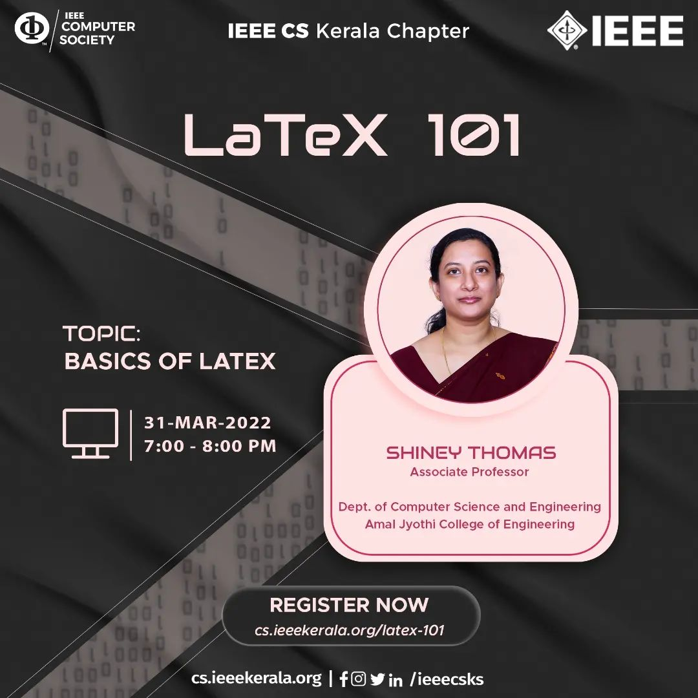

Updates
LEADERSHIP TEAM AND EXECOM FORMATION
The Student Leadership Team of the year 2022 of the IEEE Computer Society Kerala Chapter was formed on January
23rd 2022.
The Professional Execom and The IEEE CSKS Volunteer team for Content, Design and Video was released on 17th
February 2022.
A new SYP team was introduced in the IEEE Computer Society of Kerala Chapter. Active 4th-year members of IEEE
Computer Society were identified through chairs and 2 Hub coordinators were selected from each hub. Thus the SYP
Team was formed.
Womennovate
Womennovate was an idea pitching competition conducted as part of International Women’s Day by WiC of IEEE CS
Kerala Chapter on 13th March 2022. The topic was to find a technical solution to any problem faced by women. The
event had a cash prize of 1.8k INR. It was a team event where each team could have up to 3 members, consisting
of at least 1 girl.
The competition was conducted via google meet and found the overall participation of 10 teams with 39 students
in total. The judging panel consisted of two female senior members from the IEEE CS Kerala Chapter Execom.
At the end of the event, judges had very positive feedback about the ideas and the solutions. The participants
were able to find the flaws and drawbacks within their ideas.
The winners of the event were Souparnika KS and Vasant Joseph who got first prize. Jayalekshmi Jayakumar, Meera
Jayaram and Christina K James who was second and Diya Jose with third prize.
Resume Building Competition
The first task of the IEEE Computer Society Kerala Chapter's flagship event has officially concluded with
triumph. The fraternity, realizing the impact of an excellent resume in the eyes of a recruiter and its
importance hosted an online resume-building competition exclusive to the IEEE CS Members.
The event focused on the amelioration of the participants, helping them have a worthy resume in hand post the
competition which could be used in their future. The event, announced on 8th March 2022 substantiated a
participant count of 86 within its closing date, 12th March 2022. The resume for a project managerial role was
submitted by the participants which were evaluated and provided feedback for improvisation to each candidate.
Abhijith KP from Mar Baselios College of Engineering and Technology secured first place, and Nevin Koshy Daniel
and Robin Roy from AJCE won second and third place respectively. The winners bagged a total prize of Rs 1000.
LaTeX 101

The talk session was organized to provide insight on the topic ‘Basics of LaTeX’ - the document preparation
system. It was handled by Ms Shiney Thomas who is an associate professor in the Department of Computer Science
and Engineering at Amal Jyothi College of Engineering. It was held on 31 March 2022 at 7 P.M. There was a total
of 40 participants in the meet. A brief introduction was given to the features and possibilities of the
typesetting system. To utilize the features online, the participants were acquainted with Overleaf, the
collaborative cloud-based LaTeX editor and guided on report and article creation. Feedback forms were rolled out
at the end of the session. The participants described the session as informative, right-paced and quite useful.
Membership Development Sessions
IEEE Computer Society Kerala Chapter has conducted three membership development sessions at respective colleges
CUSAT, FISAT, and SJCET Palai. The chairs had reported the program to be a great success and directly impacted
their membership development.
The first membership development session RESURGENCE 2022 was held on 3rd February 2022. The session was
conducted by Ms Deepthi Sasidharan, Vice-chair of IEEE CS Kerala Chapter, and Mr Sandeep EP, membership
development co-ordinator of IEEE Computer Society Kerala Chapter.
As the first membership development was a great success, the IEEE Computer Society Kerala Chapter had conducted
an icebreaking session at CUSAT on February 20 2022, with our most enthusiastic volunteers Mr Gokul C M, Student
representative of IEEE Computer Society Kerala Chapter, and Ms Jyothika Nithin, Women in Computing coordinator
IEEE CS Kerala Chapter which was an eye-opener for the participants of the session.
The recent membership development session was conducted at IEEE SB SJCET on 27th February 2022. The session was
handled by our prominent volunteer Ms Bhadra Jayakumar, the Former student representative of the IEEE Computer
Society Kerala Chapter.
All the sessions were a great success that motivated all the participants to take part in Computer activities
and become great volunteers.
Achievements
REM SCHOLARSHIP WINNERS FALL 2021
IEEE Computer Society Richard E.Merwin scholarship winners' fall 2021 results were published on 23 February
2021. We were proud to have the dedicated volunteers, Ms Parvathi J. Nair and Ms Amal Abdul Azeez honoured by
the Richard E. Merwin Scholarship.
UPSILON PI EPSILON HONOR SOCIETY AWARD WINNER

The Upsilon PI Epsilon Honor award was released on February 23rd 2022. We were honoured to have Ms Lavanya E V
as the winner.
IEEE Computer Society Kerala Chapter TEAM’22 ACHIEVEMENTS
Mr Karthik K, joint Secretary-Industry, IEEE CSKS made us proud by getting selected as the Student Branch
Coordinator of IEEE R10 Student Activities Committee.
Ms Bhadra Jayakumar, Former SR and Malabar Hub coordinator-SYP Team'22 made us proud by getting recognised as
the outstanding student volunteer in 2021 and getting into IEEE R10 Student Activities Committee as Outreach
Coordinator for the year 2022.
Mr Gokul C M, Student representative, IEEE CSKS made us so proud and got selected as the Vice-chair of the
IEEE
India Council Student Leadership team, 2022.
Mr Akarsh Ashok, joint secretary YP, IEEE CSKS got selected as the Webmaster at IEEE India Council Student
Leadership Team 2022.
Hub Events
Kochi Hub
RSET IEEE Computer Society organized ‘EXPLEO’ as a part of IEEE RSET SB's event series ‘Celestia’.It was a
reverse coding competition held on Tuesday, 15th March 2022 at 6 PM. It was an individual event held online on
the HackerRank coding platform.
The participants were given a series of output questions and their corresponding partial code. They were then
asked to fill in the missing code that would produce the given outputs. The top 3 participants with the
highest score on the HackerRank platform were declared winners. The winners were Siddhartha Gautaman, Joel
Manuel and Jowin George who got 1rst, 2nd and 3rd respectively. The competition was thoroughly enjoyed by all
the participants.
IEEE Computer Society Student Branch Chapter College of Engineering Chengannur organised Bootcamp.py, a
peer-to-peer learning programme for students with little or no coding experience. It was conducted online
using HackerRank and Google Meet from 2nd February 2022 to 27th February 2022. The goal of the programme was
to assist students to learn python, which would give them a head start in the world of programming. There were
110 students from the First, Second and Third Year with 13 mentors to guide them. With the systematic
orientation of the programme, Bootcamp.py turned out to be a great success.
Travancore Hub
IEEE Computer Society SBC GEC Barton Hill, Trivandrum conducted Cognitionis 2.0 #2 was an online quiz based on
the theme “Integrated Approach in Science & Technology for a Sustainable Future” as part of the yearlong quiz
series Cognitionis 2.0 organised by IEEE Student Branch GEC Barton Hill, Trivandrum. The event was conducted
exclusively for IEEE Members on 9th March 2022 from 7:30 pm to 7:45 pm IST via Quizizz. It was conducted in
association with the National Science week.
There were 70 participants from different institutes who participated in the quiz which lasted for fifteen
minutes. It received a lot of positive feedback from the participants.
IEEE CS SBC LBSITW in association with IEEE Kerala Young Professionals organised a YP Talk on Mobile app
development using Thunkable. The session was handled by Mr. Jacob Thomas Puthukeril, System Analyst at
Weatherford International. It was conducted in online mode via google meet on 13th March 2022 from 5.00 pm-
6.30 pm. There were a total of 104 participants with 53 IEEE members and 51 non-IEEE members.
The session was handled very well and the participants were engaged throughout the session. Overall the
session was very informative and interesting and the feedback received from the participants was positive in
nature.
Malabar Hub
Computer Society IEEE SB GCEK conducted SIMILIS, a 24 hours web development competition to bring out the
creative web designer in members. It was conducted on 30th April 2022. There were 7 participants in total. The
participants were provided with a screenshot of a website and the challenge presented to them was to rebuild
the website with maximum similarity. The competition was conducted exclusively for the IEEE members of GCEK.
In the end, Thejus M Manoj of S4 CSE bagged first place while Jeffrey Shijo of S4 CSE bagged second place.
The participants were given a series of output questions and their corresponding partial code. They were then
asked to fill in the missing code that would produce the given outputs. The top 3 participants with the
highest score on the HackerRank platform were declared winners. The winners were Siddhartha Gautaman, Joel
Manuel and Jowin George who got 1rst, 2nd and 3rd respectively. The competition was thoroughly enjoyed by all
the participants.
IEEE Computer Society Student Branch Chapter College of Engineering Chengannur organised Bootcamp.py, a
peer-to-peer learning programme for students with little or no coding experience. It was conducted online
using HackerRank and Google Meet from 2nd February 2022 to 27th February 2022. The goal of the programme was
to assist students to learn python, which would give them a head start in the world of programming. There were
110 students from the First, Second and Third Year with 13 mentors to guide them. With the systematic
orientation of the programme, Bootcamp.py turned out to be a great success.